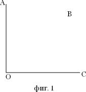

Беседа 1718 от 3877 · Беинса Дуно
Силови центрове / Отношение на силовите центрове
Размишление.
Сега ще ви кажа, докъде сте стигнали, т. е. какво е положението на вашия клас. Първо, вие не сте точни, не знаете цената на времето. Мнозина от вас отсъстват, не посещават редовно класа. Те гледат на него като на обикновен клас. Казвате: Ние сме свободни, можем да правим, каквото искаме. – Това е заблуждение. Свободата не се заключава в това, да правиш, каквото искаш. Ако влакът се движи по-бързо, отколкото трябва, може да излезе от релсите; ако се движи по-бавно, ще закъснее. При какви условия може да се ускори движението и при какви да се намали? Кога кръвообращението се намалява и кога се ускорява? Вие се занимавате с науката, но не познавате себе си, не познавате своя организъм. Само лекарите се занимават с него. Те взимат термометъра и следят, дали температурата ви се е увеличила, или намалила.
Коя е нормалната температура? – За възрастния е 36.6°. От тази температура се следи, дали се качва и с колко градуса. Ако дойде до 37°, станало е повишаване на температурата с четири десети от градуса. Коя е причината за повдигане на температурата? Според мене, причината се крие в присъствието на четири дейни единици. Добре е да проверявате температурата при радостно или скръбно състояние. Интересно е да видите, изменя ли се температурата, или остава пак 36.6°. Съзнанието ви влияе ли се от температурата? Казват, че полето на зрението на човека се увеличава и намалява. Всъщност, става ли някаква промяна със зрението? – Плоскостта на зрението се увеличава и намалява. Отговорете научно, при какви условия стават промените на това поле?
Изобщо, при какви условия стават промените? Ако професорът ви е разположен или неразположен към вас, коя е причината за това? Не е безразлично, какво е разположението на професора ви към вас. Вие не сте дете в първоначалното училище, да сгрешите нещо, и учителят ви да ви потупа по гърба и да каже: Дете е това, не разбира. Вие сте студент, професорът не може да ви потупа по гърба. Ако постъпи така, вие ще се обидите. Щом професорът е неразположен към студента, три причини има за това: първо, причината може да е в професора; второ – в студента и трето – в двамата. Професорът е неразположен към студента, ако последният, без да съзнава, го дразни с нещо: или няма добра обхода към професора, или няма обхода, изобщо, към хората. Като върви, той тропа, вдига голям шум. – Защо тропа толкова силно? – Защото обувките му са подковани с гвоздеи. Професорът му прави бележка, да смени обувките, да не тропа. – Не мога, аз съм турист, такива обувки ми са нужни. Професорът, който не е турист и не ходи по планините, казва: Тези обувки са за планината, там ги носи. За университета са нужни леки обувки. – Това са традиции, които развалят отношенията между хората. Как забеляза професорът, че студентът е с подковани обувки? Как забелязва лекарят, че температурата на болния минава нормалната? Ще кажете, че той си служи с термометър. Значи, и професорът има някакъв инструмент, с който познава какви обувки има студентът. Опасно е, когато температурата на болния се качва. Като дойде до 41°, болният свършва вече. Той не може да издържи по-висока температура от 42°. Обаче, има микроби, които минават 42°, те живеят и над 120°; някои микроби живеят и над 200°, даже и над 300°. – Защо човек не може да издържи температура 42°? – Защото тогава стават известни реакции в организма, при които се образуват отрови.
Сега, да съберем цифрите, които образуват числото 36.6°. Значи, 3 + 6 = 9 + 6=15; 1+5 = 6. Какво означава числото шест? Ще кажете, че това е работа на математиката. Тогава, какво е отношението между правата и кривата линия? Как се образува правата линия? – От движението на точката в известна посока. Най-късото разстояние, което точката може да извърви от един център към друг, е правата линия. Ако точката минава през няколко центъра, които не са в една посока, тя образува крива линия. Значи, отношението между две разумни същества образува права линия. Ако между тях се вмъкне едно или повече същества, образува се крива линия. Отношението АО е отношение по права линия, отношението на точката О към С е пак по права линия, радиуси на кръга. Обаче, отношението на А:В и на В:С е по крива линия; те са точки на окръжността. Ако точката А иска да има отношение с С, тя трябва да мине през точката О. Тогава се образуват две прави, пресечени в точка О. Така се образува ъгъл АОС. Всеки ъгъл се образува от три точки. Да вземем ъгъла АОС (фиг. 1.). При какви условия се намалява или увеличава един ъгъл? Ако ъгълът е обърнат с отвора си към вас, кога се увеличава и кога се намалява? Колкото по-далеч сте от него, толкова е по-тесен; колкото повече се приближавате към него, толкова повече се увеличава. Всъщност, ъгълът нито се намалява, нито се увеличава, но вие се приближавате и отдалечавате от него. Увеличаването и намаляването на ъгъла зависи и от гъстотата на материята; колкото по-гъста е материята, толкова по-малък става ъгълът; колкото по-рядка е материята, толкова по-голям става ъгълът.

Питам: Кое накара слугата да продаде стомните и да каже на господаря си, че не знае, де са? Той казва: Аз ги оставих на мястото. Кой ги е взел, не зная. С това той иска да изнесе нова научна теория, че едно тяло може да бъде едновременно на две места. Понеже всички тела са в движение, и стомните се движат. Господарят доказва на слугата си, че теорията му е крива. Слугата твърди, че щом стомната излезе от пещта, работата й е свършена, не може да остане на едно място. Кой от двамата е прав?
Какво ще стане с вас, ако и вие, като стомната, се движите от едно място на друго? Вие живеете на земята, дето сте в постоянно движение. Представете си, че друго тяло от небесното пространство, което се движи с по-голяма бързина от вашата и с по-голяма притегателна сила от земната, се приближи към земята. Това тяло ще привлече всичките хора от земята. И вие, заедно с тях, ще се привлечете от него, както стомните се привлякоха от слугата. Вашата работа ще остане недовършена. Такава притегателна сила се крие в златото. Даже професори, свършили няколко факултета, се привличат от златото. Голяма динамична сила се крие в него. И вие, като ученици, всеки момент може да се привлечете от златото. Като дойде до гимнастическите упражнения, обленявате се, не ви се ще да ги правите. Обаче, накарат ли ви да копаете земята, да намерите злато, готови сте по цели дни да вдигате и слагате мотиката. С това вдигане и слагане на мотиката може да намерите толкова злато, че да се осигурите за цял живот. С него може да учите, да станете музикант, художник. То ви открива широк път в живота. Ако наследите десет милиона лири стерлинги, каква професия ще си изберете? Ще кажете: Богат човек съм, не ми трябва никаква професия. Ще си купя един голям чифлик, два автомобила, няколко коня арабска порода, ще си пазаря десетина слуги и ще се разхождам, добре облечен, с автомобил. После ще си наредите една ботаническа градина, с най-редки растения; една зоологическа градина, с особени екземпляри животни. Ще имате на разположение доктори, които да се грижат за животните; също ще имате доктори и за хората. Може ли да имаш на разположение десет милиона лири стерлинги и да станеш зидар или слуга? Каква е вероятността за това? – Кога богатият може да стане слуга? – Когато е болен. Като дойде лекарят и предпише лекарство, богатият го изпълнява точно по заповедите му. Лекарят заповядва, а той изпълнява. – Докога богатият ще слугува? – Докато е болен. Щом оздравее, той отново става господар с десет милиона лири стерлинги. Ще казва: Аз се научих да слугувам. Искам и вие, моите слуги, да бъдете като мене. Какви са слугите: болни, или здрави? Болният не е истински слуга. Той е само послушник, учи се да слугува. Той е кандидат за слуга, още не е станал слуга.
Какво, всъщност, представят богатият и бедният? Богатият е човек, турен в пещта, да мине през ред химически опити. Богатството е пещ, в която пекат богатия. Бедният е вън от пещта, турен на работа. Богатият не е годен за работа, други му помагат, други работят за него. Слуги го обличат, разхождат го. Щом обеднее, той е готов за работа. Според мене, богатият трябва да работи, а бедният да почива. Как е започнала природата: с богатството, или с бедността? Природата е започнала с най-голямото богатство, а свършва с най-голямата беднотия. Преведете тия мисли, да видите, какво знание се крие в тях.
Сега, да се спрем на един научен въпрос. Какво е отношението на телата, които се движат с неизмерима бързина към вас? Отношението им е такова, каквото е на молекулите на едно тяло, които се движат с неизмерима бързина. Ако в това тяло има, например, един милиард молекули, може да си представите, какво стълкновение става между тях, като знаете, че те се движат с неимоверна скорост. Ако човек направи един скандал през седмицата, веднага ще пишат във вестниците. А една молекула прави милиарди стълкновения, без да се забележи това. Какво ще бъде състоянието на тия молекули, ако срещу всяка от тях се заведе дело за тия скандали? Питам: Може ли да считате нормален живота във вашия организъм при това състезание и стълкновение между частиците му? Ето защо, задачата на човека е да доведе частиците на твърдата материя на своя организъм и силовите центрове в него в пълна хармония. Това значи, да възпита всички скандалджии в себе си. Колко време ще ти отнеме, да възпиташ един атом кислород в организма си? Знаете ли, колко скандали произвежда един атом в секунда? Той пише по няколко милиона любовни писма в секунда, с които скарва хората.
Питате: Какво представя любовта? Според някои, любовта е привличане между душите. Момата казва: Тоя момък ме привлича. Момъкът казва: Тази мома ме привлича. – Каква любов е тая, която привлича? Аз говоря за любовта в широк смисъл, а не за тази любов, която днес те привлича, а утре те отблъсква.
Сега, като ви наблюдавам, виждам, че малцина от вас имате нещо определено в себе си. Повечето си мислят, че, като се родили веднъж, ще живеят между хората, ще учат, ще се образоват, ще работят, докато един ден заминат за другия свят. Вие си представяте онзи свят такъв, какъвто не е. Мислите, че, като отидете между разумните същества, ще ви приемат с почести. Отношенията ви с тях ще бъдат такива, каквито и с хората на земята. Какво представя оня свят? – Свят на свободата. На земята човек е в затвор. Знаете, какво е положението на затворника. Той прекарва там десетки години, и отвреме-навреме го пускат на свобода, да види слънцето. Щом влезе в другия свят, той е вече свободен, вън от затвора. За богатия онзи свят е по-добър, а за бедния – този свят. – Защо? – Студено е вън. Ако си беден и нямаш дебели дрехи, обувки, по-добре стой в затвора, да не трепериш вън. Ако си богат, имаш пари, дрехи, обувки, по-добре излез вън, на свобода. – Какво да правим ние? – Понеже сте богати, излезте от затвора. Хвърлете затворническия халат, свалете оковите и излезте вън. После идете на баня да се окъпете, да се освободите от паразитите. След това, влезте в свободния свят, при благоприятни условия.
И тъй, това, което досега ви мъчи, са неблагоприятните условия. Като се натъквате на лошите условия, четете разни философски книги, дето се казва: Живей добре, постъпвай добре! – Лесно се казва да живееш добре, но ако си между два центъра. Там отношенията са правилни, лесно се постига всичко. Но ти имаш отношения с хиляди центрове. Как ще се справиш с тях? Тук ще се движиш не само по права линия, но и по крива. Налага ти се да опиташ кривата линия и във взимането, и в даването. За да се справиш с кривите линии, ще изучаваш окултните науки. Например, искаш да вдигнеш един стол. Няма да го хванеш с цялата си ръка, но само с един пръст, с показалеца на дясната си ръка. Ти ще му заповядваш, а той ще те слуша. Докога ще ме слуша? – Докато му заповядваш. Ще кажеш, че това е лесна работа. Ще се опиташ, да видиш, колко е лесна.
Представи си, че аз съм професор, а ти – студент. Аз вдигна стола с показалеца си, и ти го вдигаш. Вдигам стола със средния си пръст, и ти го вдигаш. Без да си служа с пръста, казвам на стола да се вдигне, и той се вдига. И ти казваш на стола да се вдигне, но той не се вдига. Коя е причината за това? Столът е свързан с невидими нишки, едновременно и с центъра на слънцето, и с центъра на земята. Когато двете сили действат едновременно, столът стои неподвижен. Понеже аз зная законите, които управляват тия сили, отслабвам силата, която държи стола с центъра на земята, и той постепенно се издига нагоре. После, отслабвам силата, която го държи нагоре, и той започва да слиза. Който може да намалява и увеличава силите на тия два центъра, той може да заповядва на предметите да се вдигат нагоре и да слизат надолу. Освен нагоре и надолу, ти можеш да движиш предметите надясно и наляво – според желанието си. Същото става и с човека, поради което, всички постъпки, свързани с енергиите на земята, считаме за нормални. Ония, които са свързани с енергиите на слънцето, считаме морални и добри. Какво е разстоянието до центъра на земята, ако се върви по права линия? – Шест хиляди километра. – За колко време се взима това разстояние? Като знаете, че един километър се взема за 15 – 20 м., може да изчислите, за колко време ще се измине разстоянието от шест хиляди километра.
Сега пак повтарям: от вас се иска точност. Така, както следвате класа, вашата наука ще бъде разтегната. Такава наука не дава добри резултати. Какво става с кацата, ако обръчите й се разтегнат? – Постепенно тя ще се разглоби. Съдържанието на такава каца лесно изтича. Обръчите й не трябва да се разтеглят, но и кацата не трябва да пресъхва. Такива каци се нуждаят от нови обръчи. Обръчът е закон, който трябва да се прилага на място. На същото основание, казвам: Всяка наука е ценна, когато може да се приложи.
Класът на младежите, наречен специален клас, е определен да става в петък. В колко часа се събирате? – В шест часа сутринта. Числото шест обича точността. И животът има отношение към точността. Следния път искам всички да бъдете точни, да дойдете точно в шест часа. Който дойде след шест часа, ще го считаме, че е болен, с температура 37° – 38° – 39°. Може ли да учи човек, който има температура? Какво може да се направи с такъв човек? Ако температурата се повдигне до 42°, човек обеднява. Богат е, докато температурата му е 37°. Започне ли да се повишава, равновесието му се губи, и той се намира пред слаба криза. Ако температурата спада и дойде до 36° или 35°, пак не е добре. С каква бързина се движи светлината? – С 300 хиляди километра в секунда. Еднаква ли е бързината на светлината, която излиза от слънцето и на тази, която отива към него? Трябва да бъде еднаква, но при условие, че и при слизане, и при качване светлината минава през еднакво гъста среда. Може ли светлината да се спре за малко в пътя си, да си направи среща? – Не може. И Бог, когато пожелае да се спре някъде, едва ли ще спре за повече от една триста хилядна част от секундата.
Сега, ще направим един опит за точност. Следния път всички ще гледате да дойдете точно в шест часа. Не се позволява абсолютно никакво закъснение! Нито десет секунди! По-рано може да дойдете, но не и по-късно. Всеки да си послужи с верен часовник, да не се излъже. Може да си нагласите часовниците с тукашния, да има единство в проверката. Опитът ще бъде идния петък. Всеки да бъде искрен към себе си, ще си отбележи, с колко минути е подранил. Който закъснее, ще стои вън прав. Кой трябва да седи, и кой да стои? – Който е дошъл по-рано и навреме, ще седи; който е закъснял, ще стои. При това, всеки трябва да си даде отчет за причината, поради която е закъснял. Той трябва да си отговори, оправдава ли го тая причина, или не. Всеки носи отговорност пред себе си. – Какво правят в сегашните училища с учениците, които закъсняват? – Ако ученикът закъснее 15 м., считат го за едно неизвинено отсъствие. Щом се съберат няколко неизвинени отсъствия, ученикът се изключва. Един от учениците в класа ще се задължи да напише на лист, кой кога е дошъл, с колко минути по-рано, или с колко минути е закъснял. Също така ще напише и причините за закъснението.
За следния път, като направите упражнението за точността, ще пишете върху темата: – В колко часа влязох в класа – точно в шест часа, или преди шест. Какво беше времето: ясно, облачно, топло или студено. Сега аз искам да ви помогна, да разберете, де е стомната и как е отишла на пазара. Това е научно изследване. Когато стомните отиват на пазара, разходите на господаря се увеличават; щом престанат да ходят на пазара, разходите на господаря се намаляват. Същото се отнася и до вас. Не оставяйте стомните ви да отиват на пазара, за да се увеличи вашият бюджет. В касата ви има вече криза. Ако продължавате така, ще фалирате. Грешката може да е ваша, може и да е чужда, но отговорността е ваша. Вие сте играли на карти, знаете добре, че като ги наредите на фигурки и бутнете една от тях, цялата фигура се разваля. Така са свързани всички хора. Като бутнеш един, всички падат. Като отивате на бойното поле, достатъчно е един войник да извика „ура“, за да го последват всички. Като се нахвърлят на неприятеля, един след друг падат ранени и убити. След това ги занасят в болницата, дето забравят болките си и, вместо да се опомнят, казват, че те са победили.
Помнете: Никой човек не е свободен. Докато си в известна редица, ще носиш последствията на общия живот. Постъпките на хората представят такава редица. Каквото направиш ти, и другите го правят; каквото правят другите, и ти ще го направиш – не може да не ти се отрази. Хората са свързани едни с други, преплетени са. За да не се спъват взаимно, от всички се иска чист, морален живот. Ако не живеете така, ще увиснете на примката и ще платите с живота си. Моралният живот освобождава човека от примките, в които се е оплел. Много примки има в живота, но човек трябва да знае, как да се освобождава от тях. Съществува наука, която освобождава човека от примките и изкушенията. За момата примката е красивият момък, добре облечен, сладкодумен. Щом постигне желанието си, той ще тури примката на врата й и ще я обере. Имаш една идея, искаш да постигнеш нещо велико – и това е примка. Тази идея ще те отнесе в един свят, вън от реалността.
Две реалности има в света: реалност на глупавите хора и реалност на умните. Докато си на земята, ще се движиш между двете реалности, ще бъдеш и между глупавите, и между умните. Ако попаднеш между пияници, искаш, или не искаш, ще те накарат да им играеш. Ако не се съгласиш, ще те бият. Ако можеш да се справиш с пияниците, умен си; ако не можеш да се справиш, не си умен. И вие трябва да се справите с пияниците в себе си. Ако не се справите, ще ви бият. Всяка грешка в живота ви се дължи на факта, че не можете да се справите с пияниците. Казваш: Не исках да сгреша, но какво да правя? Хванаха ме пияниците и ме накараха да правя това, което не искам. Такива са условията на живота. Ако не правя, както те искат, ще ме бият. Според мене, това е забава. Има един свят на забави, свят на децата. Майката казва на децата си: Няма да бутате тия гърнета! Обаче, щом останат сами, те бъркат в гърнетата. Като се върне майката, прилага закона, след което се чува плач и вик. – Докога се налага този закон? – Докато децата са малки. Щом пораснат децата, станат студенти, законът не ги лови. Те са извън престъпленията. Те имат право да бъркат в гърнетата и да ядат, каквото искат. Майката се радва, че те са свободни, самостоятелни. В света на децата законът е възпитателно средство, а не че там се вършат големи престъпления. Има ли нещо лошо в това, че си взел част от богатството на банкера? – Облекчил си товара му. Де е престъплението? Златото негово ли е? То е взето от земята. Крадецът казва: Аз ще взема златото на богатия и ще го занеса там, отдето е извадено. Хората обичат златото, но не знаят, как да го обичат. Ако го обикнат, както трябва и научат езика му, никой няма да го краде.
Миналия път темата беше: „Отношение между правите и кривите линии.“ На кривата линия съответства една права. Правата линия има два центъра, а кривата – няколко. Трябва да се определят центровете на кривите линии. Когато се казва, че на кривата линия съответства права, подразбираме правилно отношение. Следователно, линията е крива дотогава, докато се намери съответната права. – Как се образува кривата линия? От колко точки е съставена тя? – От много точки, от милиони точки. Те представят капитал, даден от разумния свят. От всички се иска точност. Само така можете да бъдете силни хора. Силен човек е оня, който може да побеждава мъчните условия на живота си. – Кой ученик е способен? – Който решава правилно задачите си. Ако на десет задачи решава само една, какъв ученик е той? Ако знаеш само действието събиране, какъв ученик си ти? Казваш: Зная добре делението. – Можеш ли да делиш с точност? Как ще разделиш 57 на 5? Сега аз искам да ви наведа към общите закони, да разберете, че физическите резултати имат отношение към умствените, а умствените – към духовните. Значи, всеки физически резултат крие в себе си известно количество мисли и чувства. Например, във всяка кост се крие известно количество умствена енергия; по нея може да познаеш, колко интелигентен е бил даден човек, както и неговият духовен багаж. Значи, от теглото на костта ще познаеш, какви мисли и чувства са движили човека. Всичко е написано на костта: характерът на човека, успехите и неуспехите в живота му. Това може да се изрази и чрез числа.
В математиката се работи с арабски и римски числа. Арабските числа са взети от кабалата. От числата зависи, дали ученикът ще пропадне на изпита, или ще го издържи. Европейците се страхуват много от числото 13. На 13 число малцина отиват на работа. В материалния свят на това число не му върви. То има особен характер, огнен тип. То изгаря всичко.
Сега аз искам да внеса една нова мисъл в ума ви, която да внесе ново разбиране. Нова мисъл е оная, която носи светлина за човешкия ум. Новата мисъл насърчава обезсърчения. Да бъдеш точен, това е нова мисъл, която повдига човека. Малко ще говориш, повече ще работиш, Ако учиш много и знаеш много, без да прилагаш, това са упражнения. Вие имате много упражнения, повече отколкото трябва. За вас са нужни по-малко упражнения, а повече работа.
Т. м.
5. Лекция от Учителя, държана на 30 октомври, 1931 г. София – Изгрев.
8.20 ч.с.
(Студен вятър духа.)